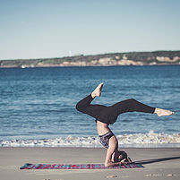

Why Atlántico?

I am an Atlantic woman, I was born in A Coruña, an Atlantic city in the north of Spain, and I currently live in Ireland; the Atlantic has played a huge part in the connection of these two places and so it does for me too.
In Ireland I developed as a yogi, practicing in different places and with many gifted teachers like Orla Fitzgerald, David Collins and Paula Hebbert. I also had the oportunity to attend workshops with Guy Donahaye and Manjo Jois among others. I then certified as a Yoga teacher at the lovely Yoga Room with Ciara Cronin.
In yoga I find an invaluable tool to feel optimal physically and nurture my mental well-being, always so important; it also brings balance, calmness, strength, awareness, connection and trust.
It is my utmost motivation and objective to share these benefits through my Yoga classes while facilitating a connection with the vast ocean of possibilities Yoga has to offer.